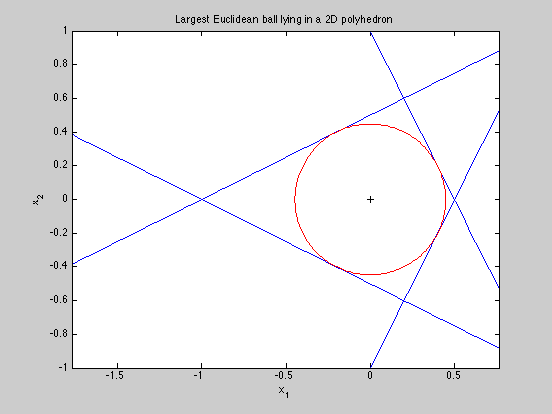

Compute and display the Chebyshev center of a 2D polyhedron
a1 = [ 2; 1];
a2 = [ 2; -1];
a3 = [-1; 2];
a4 = [-1; -2];
b = ones(4,1);
cvx_begin
variable r(1)
variable x_c(2)
maximize ( r )
a1'*x_c + r*norm(a1,2) <= b(1);
a2'*x_c + r*norm(a2,2) <= b(2);
a3'*x_c + r*norm(a3,2) <= b(3);
a4'*x_c + r*norm(a4,2) <= b(4);
cvx_end
x = linspace(-2,2);
theta = 0:pi/100:2*pi;
plot( x, -x*a1(1)./a1(2) + b(1)./a1(2),'b-');
hold on
plot( x, -x*a2(1)./a2(2) + b(2)./a2(2),'b-');
plot( x, -x*a3(1)./a3(2) + b(3)./a3(2),'b-');
plot( x, -x*a4(1)./a4(2) + b(4)./a4(2),'b-');
plot( x_c(1) + r*cos(theta), x_c(2) + r*sin(theta), 'r');
plot(x_c(1),x_c(2),'k+')
xlabel('x_1')
ylabel('x_2')
title('Largest Euclidean ball lying in a 2D polyhedron');
axis([-1 1 -1 1])
axis equal
Calling SeDuMi: 7 variables (3 free), 4 equality constraints
------------------------------------------------------------------------
SeDuMi 1.1 by AdvOL, 2005 and Jos F. Sturm, 1998, 2001-2003.
Alg = 2: xz-corrector, Adaptive Step-Differentiation, theta = 0.250, beta = 0.500
Split 3 free variables
eqs m = 4, order n = 11, dim = 11, blocks = 1
nnz(A) = 28 + 0, nnz(ADA) = 16, nnz(L) = 10
it : b*y gap delta rate t/tP* t/tD* feas cg cg prec
0 : 1.45E+000 0.000
1 : -3.47E-001 3.43E-001 0.000 0.2361 0.9000 0.9000 1.44 1 1 1.6E+000
2 : -4.26E-001 8.96E-002 0.000 0.2609 0.9000 0.9000 2.78 1 1 1.2E-001
3 : -4.47E-001 3.24E-003 0.000 0.0362 0.9900 0.9900 1.42 1 1 3.0E-003
4 : -4.47E-001 1.44E-007 0.204 0.0000 1.0000 1.0000 1.01 1 1
iter seconds digits c*x b*y
4 0.1 15.9 -4.4721359550e-001 -4.4721359550e-001
|Ax-b| = 8.0e-016, [Ay-c]_+ = 1.2E-016, |x|= 1.4e+000, |y|= 2.4e-001
Detailed timing (sec)
Pre IPM Post
3.004E-002 6.009E-002 0.000E+000
Max-norms: ||b||=1, ||c|| = 1,
Cholesky |add|=0, |skip| = 0, ||L.L|| = 1.30805.
------------------------------------------------------------------------
Status (cvx_status): Solved
Optimal value (cvx_optval): 0.447214
